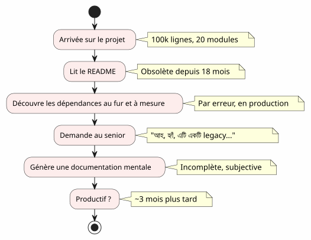
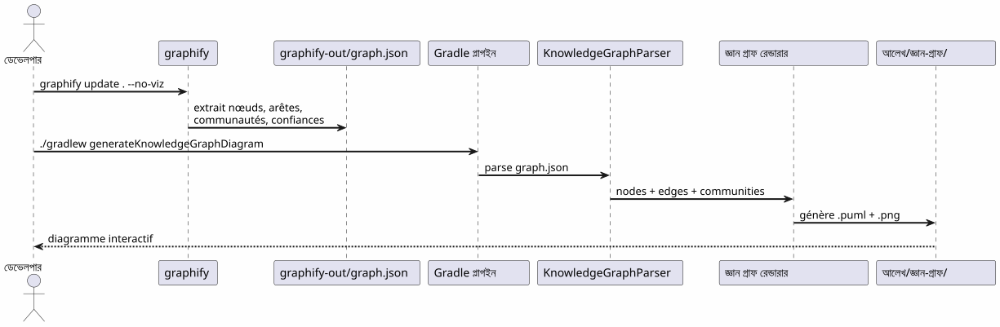
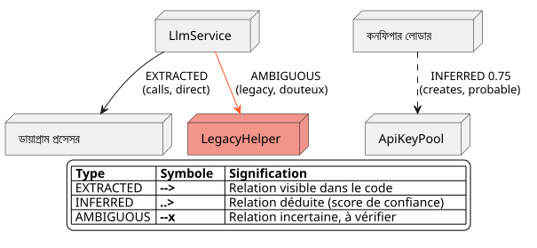
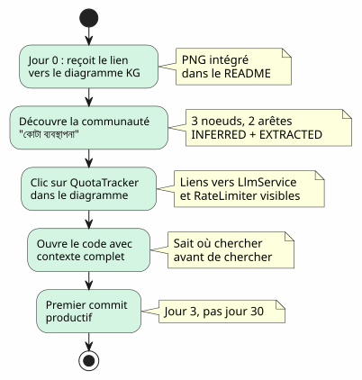

কোডবেস বুঝার সরঞ্জাম হিসাবে Knowledge Graph
Publié le 20 April 2027
- অনবোর্ডিংয়ের দেওয়াল
- Knowledge Graph কি?
- বুঝার ৪টি স্তর
- হারানো প্রেক্ষিত : একটি বাস্তব সিনারিও
- পাইপলাইন: কাস্টম কোড একটি কমান্ডে
- এজের ধরন: বিশ্বাস কী বলে
- আপনার নিজের Knowledge Graph জেনারেট করতে ৫ মিনিট
- অনবোর্ডিংয়ের জন্য মান: আপডেট করা Anaïs সিনেরিও
- দৈনিক নেভিগেশনের জন্য মান
- সীমা ও দৃষ্টিভঙ্গি
- উপসংহার
আপনি ১০০,০০০ লাইনের একটি প্রকল্পে আসছেন। ২০ মডিউল, ১০০ ক্লাস, অদৃশ্য নির্ভরতা, ভুলে গেলে রিফ্যাক্টরিংের ইতিহাস। README একটি \"মাইক্রোসার্ভিস\" আর্কিটেকচারের প্রতিশ্রুতি দেয়, কিন্তু কোড অন্য কিছু বলে। উৎপাদনশীল হতে কত সময় লাগবে?তিন মাস— আপনি যদি ভাগ্যবান হন। এবং যদি কোডের স্বয়ংক্রিয়ভাবে উত্পন্ন ইন্টারেক্টিভ মানচিত্রটি তা তিন দিনে কমাতে পারে?
- টিক
-
[]
অনবোর্ডিংয়ের দেওয়াল
প্রতিটি ডেভেলপার এই দৃশ্যকে অভিজ্ঞ করেছেন:
-
দিন ১ : আমরা আপনাকে README দেখাবো (শেষ আপডেট : ১৮ মাস আগে)
-
দিন ৩: আপনি খুঁজে পান যে মডিউলটি`billing`গোপনে মডিউলকে ডাকে`notification`
-
দিন ৭ : একজন সিনিয়র আপনি বলেন, "আহ হ্যাঁ, এই ক্লাস আসলে দুটি কাজ করে, আমি ধরে ছিলাম যে আমরা এটিকে বিভক্ত করব।
-
দিন ১৪ : আপনি বুঝেন যে সমস্ত ব্যবসায়িক বুদ্ধিমত্তা আছে`utils/LegacyHelper.java`— একটি ফাইল যেখানেও উল্লেখিত নেই

Le problème n’est pas le manque de documentation — c’est le কার্ডের কমিএটি মানচিত্র যে বাস্তব অঞ্চলকে দেখায়, শেষ redesign-এর কল্পিত এলাকা নয়।
Knowledge Graph কি?
একটি Knowledge Graph হল একটি কাঠামোগত প্রতিনিধিত্বেরজানাআপনার কোডবেসে অন্তর্ভুক্ত:
| একক | কোডের মধ্যে উদাহরণ | গ্রাফে ভূমিকা |
|---|---|---|
কনোড |
শ্রেণী, ফাংশন, ধারণা |
গ্রাফের শীর্ষ |
স্টপ! |
আহ্বান, উত্তরাধিকার, আমদানি |
দুই নোডের মধ্যে লিঙ্ক |
সম্প্রদায় |
সম্পর্কিত ক্লাসেরгруপ |
দৃষ্টিগোচর ক্লাস্টার |
এজের ধরন |
নিষ্কাশিত, অনুমানিত, অস্পষ্ট |
সম্পর্কে বিশ্বাস |
বিশ্বাসের স্কোর |
0.0 à 1.0 |
এজের নির্ভরতা INFERRED |
হাইপারএজ |
3+ নোডের সম্পর্ক |
স্থাপত্য জটিলতা |
একটি সাধারণ UML ডায়াগ্রামের সাথে পার্থক্য কি?একটি UML ডায়াগ্রাম দেখায় যে ডেভেলপার নির্ধারিত কি দেখাবেন। একটি Knowledge Graph দেখায় যা বাস্তবে সেখানে উপস্থিত, লুকানো নির্ভরতা এবং উদ্ভবিত ধারণা সম্বলিত করে।
বুঝার ৪টি স্তর
একটি Knowledge Graph নেভিগেট করে দেওয়া যায়چار স্কেল:
| স্তর | প্রশ্ন | অণুত্বপাদ | উপকরণ |
|---|---|---|---|
1 — ক্লাস |
এই ক্লাস কী করে? |
কোড লাইন |
IDE, ব্রাউজার |
2 — মডিউল |
এই মডিউলের ফাইলগুলো কি? |
ফাইল |
|
৩ — সম্প্রদায় |
কোন ধারণাগুলি একসাথে কাজ করে? |
সংযুক্ত গরুপ |
জ্ঞান গ্রাফ |
4 — সিস্টেম |
সব কীভাবে সংযুক্ত হয়? |
বিশ্বব্যাপী আর্কিটেকচার |
সম্পূর্ণ KG ডায়াগ্রাম |
Knowledge Graph না থাকলে, স্তর ৩ এবং ৪অগম্য— atau কমপক্ষে, আত্মবীক্ষক এবং প্রাচীন।
হারানো প্রেক্ষিত : একটি বাস্তব সিনারিও
একটি নতুন ডেভেলপার, Anais, যিনি প্রকল্পে আসছেন, কল্পনা করুন। সে একটি "quota tracking" কার্যকারিতা যোগ করতে LLM কলের জন্য দরকার।
Failed to generate image: PlantUML preprocessing failed: [From <input> (line 19) ]
@startuml
skinparam backgroundColor #FEFEFE
skinparam componentStyle rectangle
actor "Anaïs (নতুন)" as ana
rectangle "সে কী খোঁজছে" {
[QuotaTracker] as qt
[ApiKeyPool] as akp
[RateLimiter] as rl
}
rectangle "যে কি সে খুঁজে পায়" {
[LlmService] as ls
[ConfigLoader] as cl
}
ana --> ls : "'quota' খুঁজুন
IDE-এ"
^^^^^
Syntax Error? (Assumed diagram type: component)
@startuml
skinparam backgroundColor #FEFEFE
skinparam componentStyle rectangle
actor "Anaïs (নতুন)" as ana
rectangle "সে কী খোঁজছে" {
[QuotaTracker] as qt
[ApiKeyPool] as akp
[RateLimiter] as rl
}
rectangle "যে কি সে খুঁজে পায়" {
[LlmService] as ls
[ConfigLoader] as cl
}
ana --> ls : "'quota' খুঁজুন
IDE-এ"
ls --> cl : "ConfigLoader খুঁজুন
('quota' উল্লেখ করুন
ডিকমেন্টে)"
cl --> qt : "3 সপ্তাহ পরে:
QuotaTracker আবিষ্কার করো
এখনও_exists"
note right of qt
**Contexte perdu :**
QuotaTracker était dans
un module non-référencé
dans le README
end note
@enduml
একটি Knowledge Graph সঙ্গে, Anaïs দেখতে পারতো en৫ মিনিট:
-
QuotaTracker`সংযুক্ত`ApiKeyPool(কিনারা)EXTRACTED) -
RateLimiter`এর সাথে সম্পর্কিত`QuotaTracker(কিনারঅনুমানিত, বিশ্বাস 0.82) -
এই তিনটি নোড একটিসম্প্রদায়কোটা प्रबंधন
-
একটি হাইপারএড্জও সংযুক্ত করে`LlmService`— প্রবেশ পয়েন্ট
পাইপলাইন: কাস্টম কোড একটি কমান্ডে
Graphify + Gradle Plugin পাইপলাইন আপনার কোডবেজকে PlantUML ডায়াগ্রামে এদুটি কমান্ড:

শূন্য LLM.সব কিছু নির্ধারিত: একই কোড, একই গ্রাফ, একই ডায়াগ্রাম। পুনরাবৃত্তিযোগ্য, সংস্করণযোগ্য, অফলাইনে পরামর্শযোগ্য।
এজের ধরন: বিশ্বাস কী বলে

এজের প্রকারগুলো অনবোর্ডিংয়ের জন্য গুরুত্বপূর্ণ :
-
EXTRACTED: তুমি শান্তিপূর্ণভাবে নেভিগেট করতে পারো — এটা কোডে আছে
-
অনুমানিত(0.6-0.8) : সম্ভবчно সঠিক, কিন্তু রিফ্যাক্টরিং করার আগে জাঁচ কর
-
অনুমানিত(0.8+) : খুব নির্ভরযোগ্য — এটি রেফারেন্স হিসাবে ব্যবহার করুন
-
অস্বচ্ছ: সতর্কতা, সংবেদনশীল বিষয়. একজন বরিষ্টকে জিজ্ঞাসা করুন।
আপনার নিজের Knowledge Graph জেনারেট করতে ৫ মিনিট

নির্দিষ্ট কমান্ড
# 1. Installer graphify
pip install graphify==0.4.29
# 2. Générer le Knowledge Graph
graphify update . --no-viz
# 3. Vérifier le JSON
cat graphify-out/graph.json | jq '.nodes | length'
# → 47 nœuds
# 4. Générer le diagramme
./gradlew generateKnowledgeGraphDiagram
# 5. Filtrer par communauté
./gradlew generateKnowledgeGraphDiagram -Pplantuml.kg.community="service layer"
# 6. Limiter la taille
./gradlew generateKnowledgeGraphDiagram -Pplantuml.kg.maxNodes=20অনবোর্ডিংয়ের জন্য মান: আপডেট করা Anaïs সিনেরিও
জ্ঞান গ্রাফের সাথে, আনায়েসের কাহিনী একদম পরিবর্তিত হয় :

Knowledge Graph IDE-কে প্রতিস्थাপন করে না।— এইটি পূর্ণ করেছেন। IDE কোথায় ; KG কেন ও কীভাবে এ totalidad একত্রিত হয় উঠে যায়।
দৈনিক নেভিগেশনের জন্য মান
অনবোর্ডিং একমাত্র ব্যবহারের ক্ষেত্র নয়। একজন বরিষ্ট ডেভেলপারের জন্য, নলেজ গ্রাফকে ব্যবহার করা হয়:
Failed to generate image: PlantUML preprocessing failed: [From <input> (line 10) ]
@startuml
skinparam backgroundColor #FEFEFE
skinparam usecaseStyle roundrectangle
left to right direction
actor "ডেভেলপার" as dev
usecase "প্রতিসংগঠন" as ref
usecase "পত্রিকা
^^^^^
Syntax Error? (Assumed diagram type: component)
@startuml
skinparam backgroundColor #FEFEFE
skinparam usecaseStyle roundrectangle
left to right direction
actor "ডেভেলপার" as dev
usecase "প্রতিসংগঠন" as ref
usecase "পত্রিকা
স্থাপতyer" as rev
usecase "Debug
নির্ভরতা" as dbg
usecase "অনবোর্ডিং" as onb
usecase "থেকে নথিভুক্তি
স্বয়ংক্রিয়ভাবে তৈরি" as doc
dev --> ref
dev --> rev
dev --> dbg
dev --> onb
dev --> doc
ref --> ("চিহ্নিত
হট স্পটগুলো") : hyperedges\ndensité d'arêtes
rev --> ("জाँচ করুন
সীমাগুলো") : AMBIGUOUS\naux limites
dbg --> ("ট্রেস করুন\nকলগুলো") : EXTRACTED\nchaîne de calls
onb --> ("অনুসন্ধান করুন\nসম্প্রদায়গুলো") : filtres\npar cluster
doc --> ("তৈরি
ডায়াগ্রাম গুলো") : ./gradlew\ngenerateKnowledgeGraphDiagram
@enduml
| ব্যবহারের ক্ষেত্র | KG কীভাবে সাহায্য করে | বাস্তব উদাহরণ |
|---|---|---|
কোড পুনর্গঠন |
হাইপারএজ (3+ লিংক) দেখান |
এই ৫টি শ্রেণি সর্বদা যুক্ত আছে — একটি মডিউল বের করুন |
আর্কিটেকচার সমালোচনা |
সীমান্তে AMBIGUOUSগুলো সনাক্ত কর |
বিলিং এবং বিজ্ঞপ্তির মধ্যে ডাকা অনিশ্চিত |
ডিবাগ |
স্ট্রিংটি EXTRACTED ট্রেস করুন |
LlmService কেন LegacyHelper-কে কল করে? |
অনবোর্ডিং |
ফিল্টার দিয়ে কমিউনিটিগুলো অন্বেষণ করুন |
সার্ভিস লেয়ার কি? |
ডকুমেন্টেশন |
CI-তে ডায়াগ্রামগুলো তৈরি করুন |
README সর্বদা আপডেট |
সীমা ও দৃষ্টিভঙ্গি
একটি Knowledge Graph একটি যাদুঘড়ি নয় :
| সীমা | ব্যাখ্যা | বাইপাস |
|---|---|---|
শুধুমাত্র স্ট্যাটিক কোড |
রানটাইম নেই, ডেটা ফ্লো নেই |
APM ট্রেসের সাথে সম্পূর্ণ করুন |
INFERRED অসত্য হতে পারে |
অনুমানিত ঢালগুলো যাচাই প্রয়োজন |
বিশ্বাস স্কোর + মানবিক পর্যালোচনা |
ব্যবসায়িক সেম্যান্টিক নেই |
KG জানে "LlmService ConfigLoaderকে ডাকে", না "এটি প্রমাণীকরণের এন্ট্রি পয়েন্ট |
মানুয়াল টীকা বা LLM পোস্ট-প্রসেসিং |
কোন কালিকতা নেই |
কোডের একটি স্ন্যাপশট, তার বিকাশ নয় |
Générer régulièrement + comparer les versions |
দৃষ্টিভঙ্গি:
-
অন্তর KG: দুই সংস্করণ তুলনা করে কমিউনিটির গতি দেখুন
-
KG ইন্টারঅ্যাক্টিভ: একটি নোডে ক্লিক → সমঞ্জস্যপূর্ণ লাইনে IDE খোলা
-
KG ঐতিহাসিক: সময় অনুযায়ী সম্প্রদায়ের বিকাশ দেখানো (মাইগ্রেট হওয়া টেকনিকাল ঋণ)
উপসংহার
Knowledge Graph একটি কর্মকে রূপান্তর করেএকাকী এবং দীর্ঘ(কোডবেস বুঝতে) একটি আচরণেশেয়ার করা এবং দ্রুত(একটি মানচিত্র পরামর্শ করুন).
এটি ডকুমেন্টেশন নয় — এটিনকশা শিল্প. একটি মানচিত্র যা স্বয়ংক্রিয়ভাবে আপডেট হয়, যা বাস্তব এলাকা দেখায়, এবং যা প্রতিটি ডেভেলপারকে, নতুন বা অভিজ্ঞ, নিশ্চয়তায় নেভিগেট করার অনুমতি দেয়।
pip install graphify==0.4.29
graphify update . --no-viz
./gradlew generateKnowledgeGraphDiagram*3 কমান্ড. 5 মিনিট. আপনার কোডবেসের একটি মানচিত্র।